An ELEGOO starter kit project · reinforcement learning · sim to real
FULCRUM
A cardboard robot that learns to balance a ball in a dream, then does it for real.
- about 3 hours
- no soldering, no 3D printer
- 30 narrated steps, 16 minutes
- brain trains in about a minute
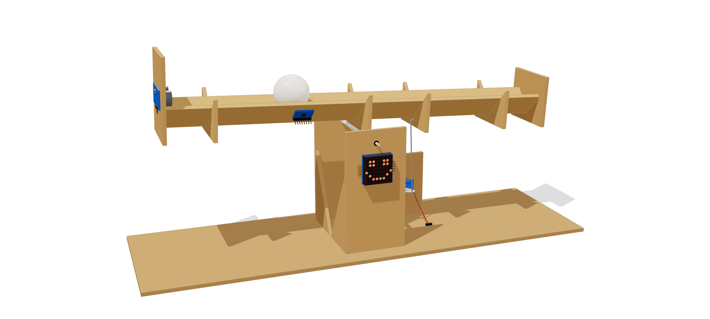
the finished robotWelcome
You'll build a robot from a shipping box and your ELEGOO kit that keeps a ping-pong ball wherever you point, on a track that tilts. Nobody writes its balancing rules. A small neural network learns them by reinforcement learning in a simulator you can watch, the Gym. You then send that brain down the USB cable into the Arduino and see whether what it learned in the dream holds up in reality.
Everything here was tested before you build it: the firmware was run on a computer against the simulated robot, calibration was tried on hundreds of deliberately crooked simulated builds, and the brain you'll train beats a hand-tuned classic controller. What I couldn't test is your actual cardboard. That's the experiment.
How it works
The trick that makes a dream-trained brain survive reality is domain randomization. Every practice run, the simulator re-rolls the robot's quirks: how sticky the track is, how slow and sloppy the servo is, how noisy the sonar is, how crooked "level" is. A brain that balances in all of those worlds has a good chance in yours.
What you need
From the kit (names as on the lid)
From home
Build the beam
All cardboard. Hot glue sets in about a minute; hold each joint square until it does. The end with the sensor is "the sonar end" and is at 0 cm on every measurement.
Cut the cardboard
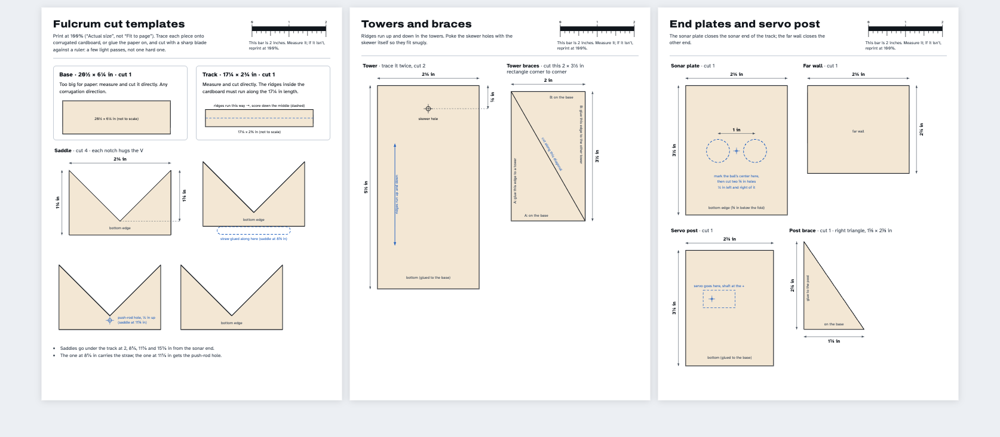
The same file is guide/fulcrum-cut-templates.pdf in the fulcrum folder.
- Cut the base, 52 × 16 cm.
- Cut the track strip, 44 × 7 cm, with the corrugation (the ridges inside the cardboard) running the 44 cm way. That keeps it straight.
- Print the templates, cut them out, trace onto cardboard, and cut: 4 saddles, 2 towers, 2 tower braces, the sonar plate, the far wall, the servo post and its brace.
Clean cuts: several light passes with a sharp blade against a metal ruler beat one hard push. Cut on something you don't mind scratching.
Fold the track
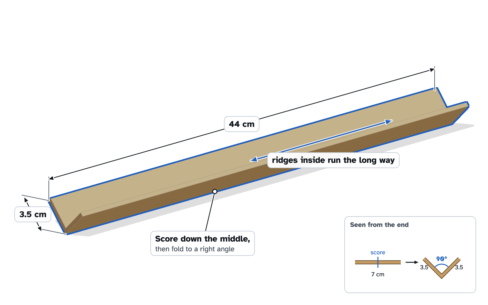
- Draw a line down the middle of the track strip, 3.5 cm from each long edge.
- Score it: press the back of a butter knife (or a dry ballpoint) firmly along the line, against a ruler.
- Fold along the score into a V with a right angle, score on the outside.
- Optional: run clear packing tape down the inside of each face for a smoother, more even roll.
Saddles and straw
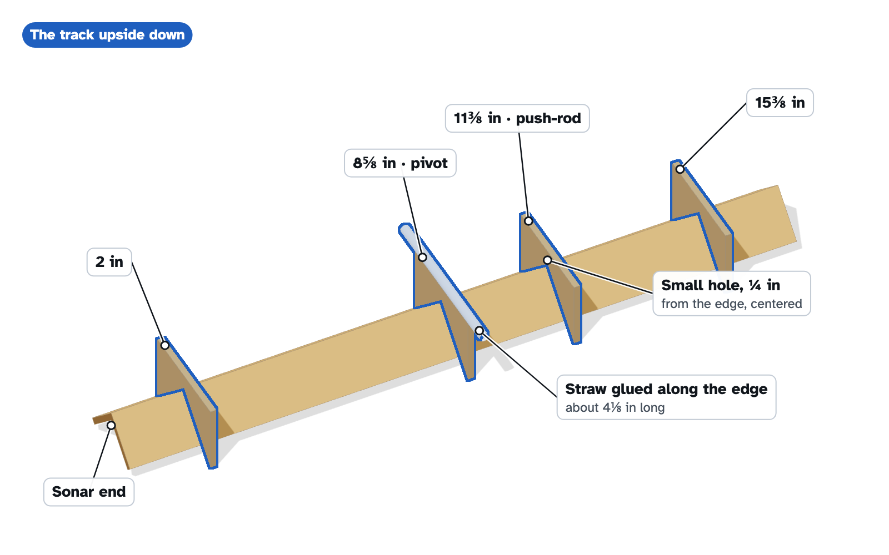
- On the outside of the V, mark across it at 5, 22, 29 and 39 cm from the sonar end.
- Cut a straw to 10.5 cm and glue it along the bottom edge of one saddle, centered. That's the pivot saddle.
- In a second saddle, poke a small hole 7 mm above its bottom edge, centered, with a skewer tip. That's the push-rod saddle.
- Glue the saddles on the marks with their notches hugging the V: pivot saddle at 22, push-rod saddle at 29, the plain ones at 5 and 39. The straw runs across the track.
Sonar plate and far wall
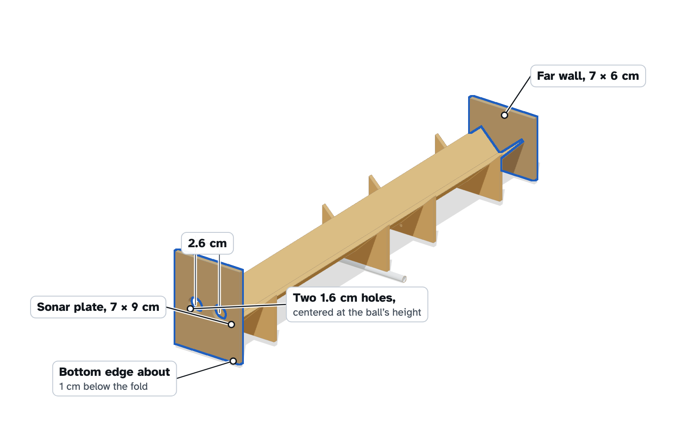
- Hold the sonar plate across the sonar end, set the ball in the V against it, and mark the plate at the height of the ball's center.
- Draw two 1.6 cm circles centered 1.3 cm left and right of the mark (2.6 cm apart), and cut them out. The sensor's silver cans should just fit.
- Glue the plate across the end, centered on the V, its bottom edge about 1 cm below the fold.
- Glue the far wall across the other end.
Towers
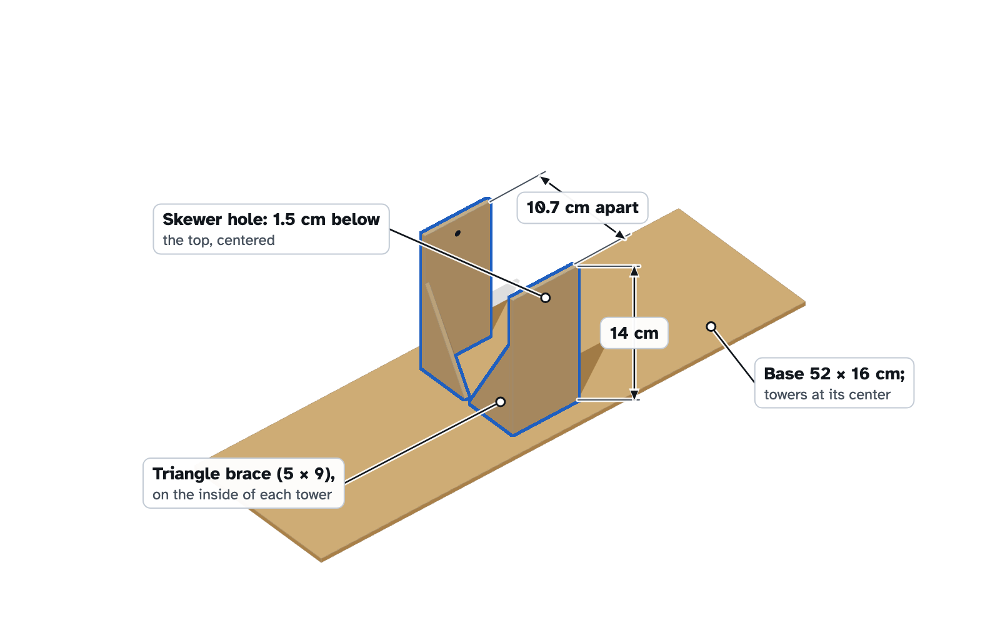
- Poke a skewer hole in each tower, 1.5 cm below the top, centered.
- Draw a line across the base at its middle (26 cm from either end). Glue the towers upright on that line, facing each other, 10.7 cm apart (inside faces), centered across the base.
- Before the glue sets, slide a skewer through both holes so they line up.
- Glue a triangle brace against the inside face of each tower, along the edge nearest the sonar end. (On the outside they'd hang off the base.)
Hang the beam
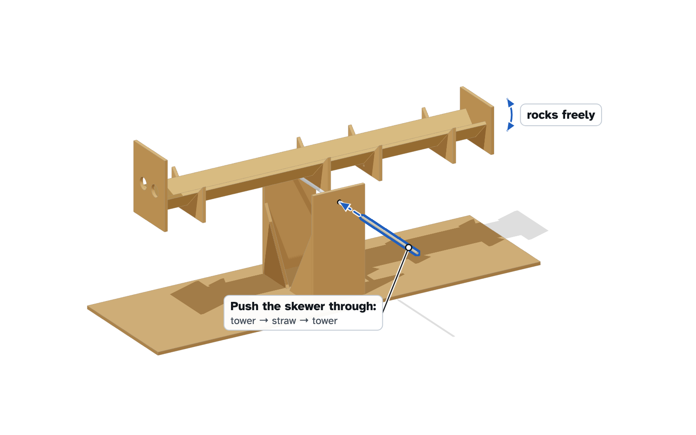
- With the sonar end on your left, push a skewer through one tower, through the straw, and out the other tower.
- Nudge the beam. It should rock freely and settle without sticking. If it rubs, trim the straw.
- Trim the skewer so about 1 cm sticks out past each tower.
The servo goes on in Part 4, once the electronics have been tested.
Wire the electronics
Do this on the table, in front of the robot near the sonar end, with nothing plugged into your Mac or the wall. In each diagram the new wires are in full color and earlier ones are faded. Any hole on the correct rail works; the diagrams show a tidy layout that keeps everything in the left half of the board.
Power
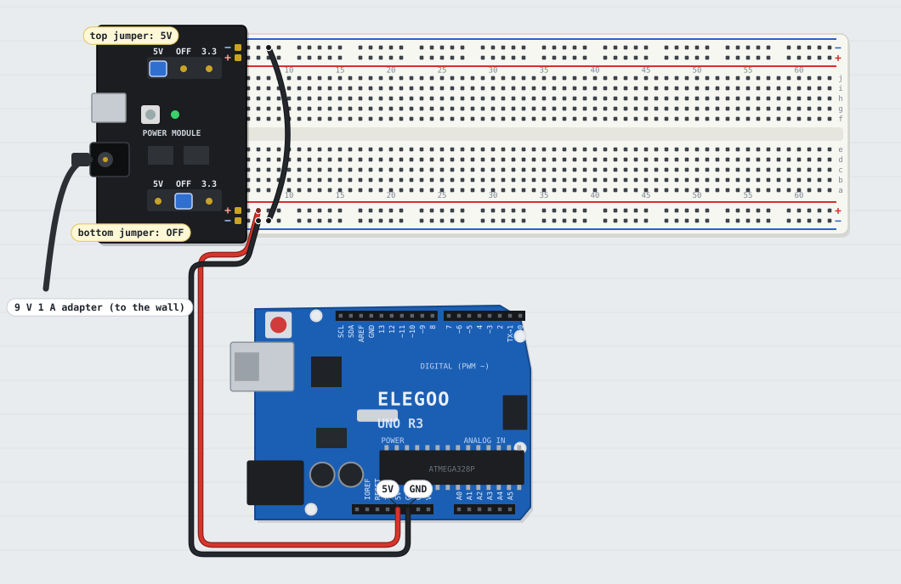
- Press the Power Supply Module onto the left end of the breadboard: its − pins on the blue stripes, + pins on the red stripes, DC jack facing out.
- Top jumper on 5V. Bottom jumper on OFF.
- Red jumper: Arduino 5V → bottom red (+) rail. Black jumper: Arduino GND → bottom blue (−) rail.
- Black jumper: top blue rail → bottom blue rail, so both supplies share a ground.
Why two supplies: the servo pulls sudden bursts of current that would jolt the sensors' readings. The top rail (power module) feeds only the servo; the bottom rail (the Arduino's own 5 V) feeds everything else.
Servo
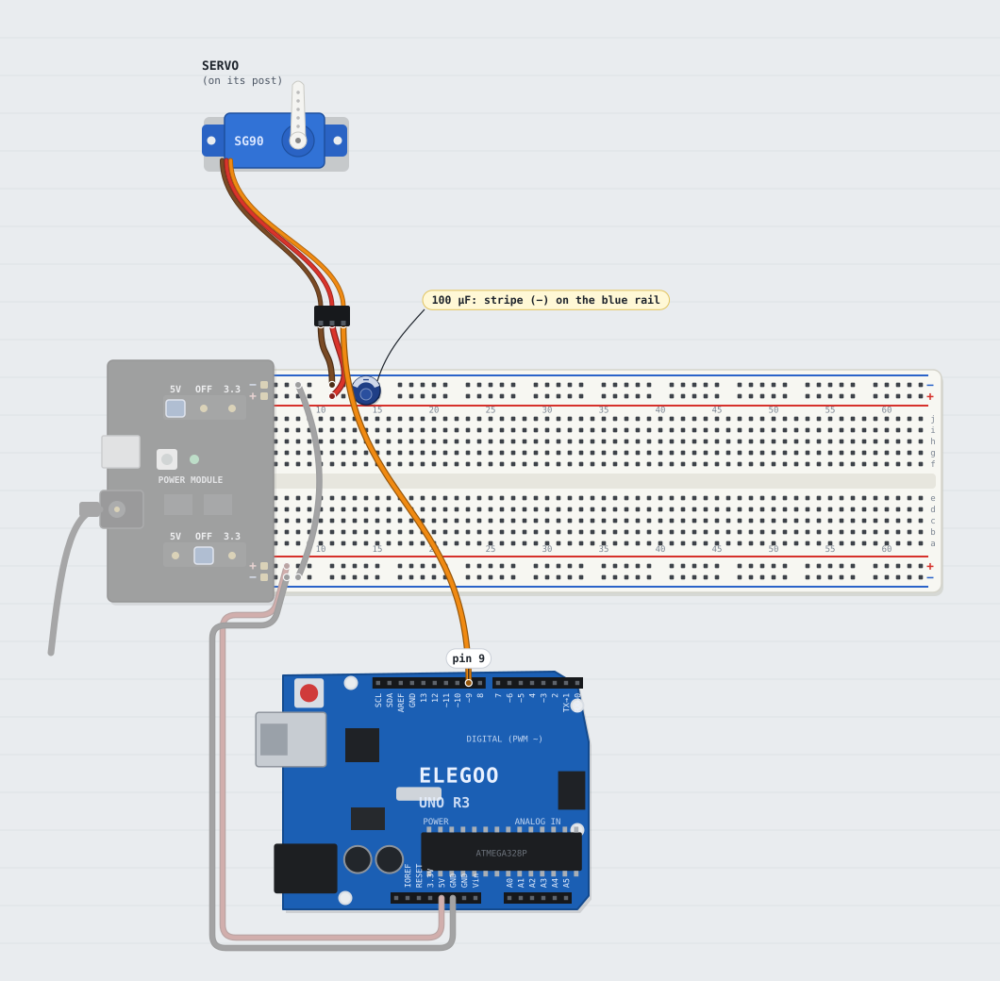
| From | To |
|---|---|
| Capacitor, long leg | top red (+) rail |
| Capacitor, striped leg | top blue (−) rail (polarity matters) |
| Servo brown | top blue (−) rail |
| Servo red | top red (+) rail |
| Servo orange | Arduino pin 9 |
Ultrasonic sensor
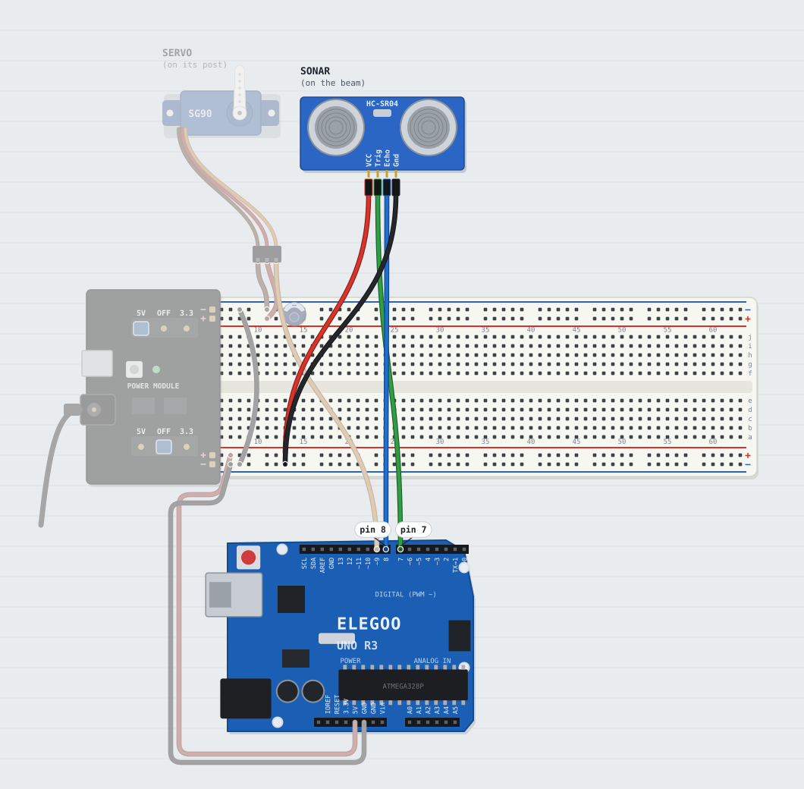
| Sensor pin | Female-to-male wire to |
|---|---|
| VCC | bottom red (+) rail |
| Trig | Arduino pin 7 |
| Echo | Arduino pin 8 |
| Gnd | bottom blue (−) rail |
Motion sensor (GY-521)
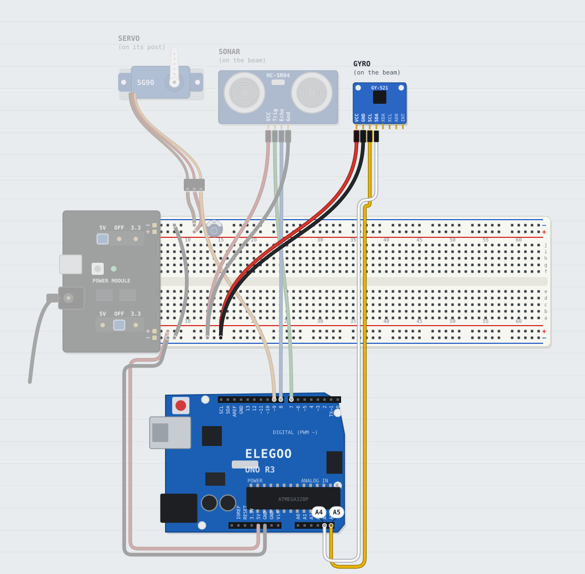
| Board pin | Female-to-male wire to |
|---|---|
| VCC | bottom red (+) rail |
| GND | bottom blue (−) rail |
| SCL | Arduino A5 |
| SDA | Arduino A4 |
| XDA, XCL, AD0, INT | nothing |
ELEGOO ships this board with either an MPU-6050 or a QMI8658 chip. The firmware finds whichever you have.
Knob
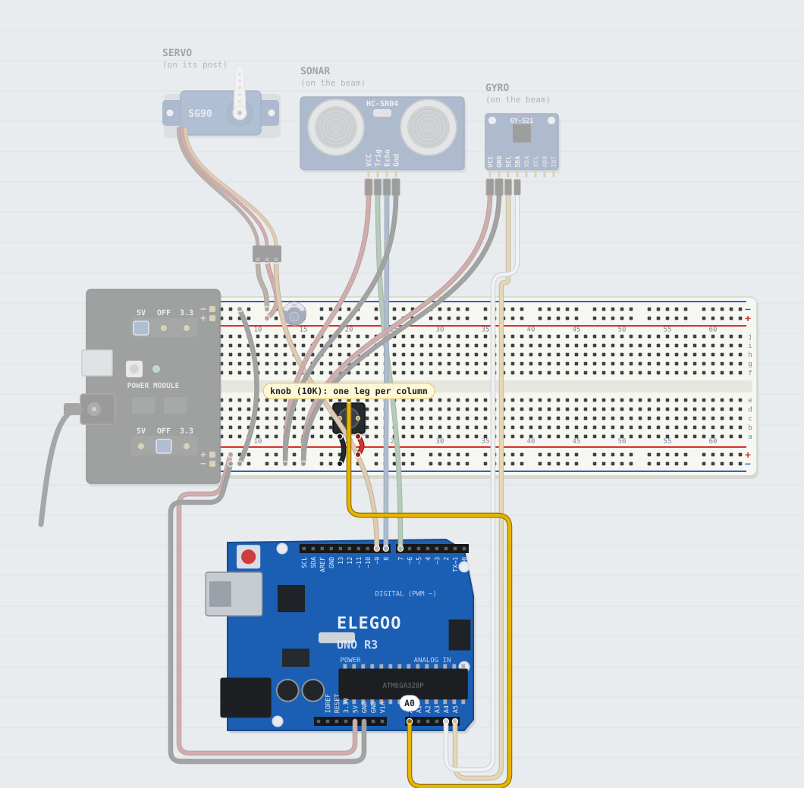
- Push the knob's three legs into three different columns (some knobs need every other column).
- Left leg → bottom blue rail. Middle leg → A0. Right leg → bottom red rail.
If turning the knob moves the target the opposite way from what you'd like, swap the two outer wires.
LED face
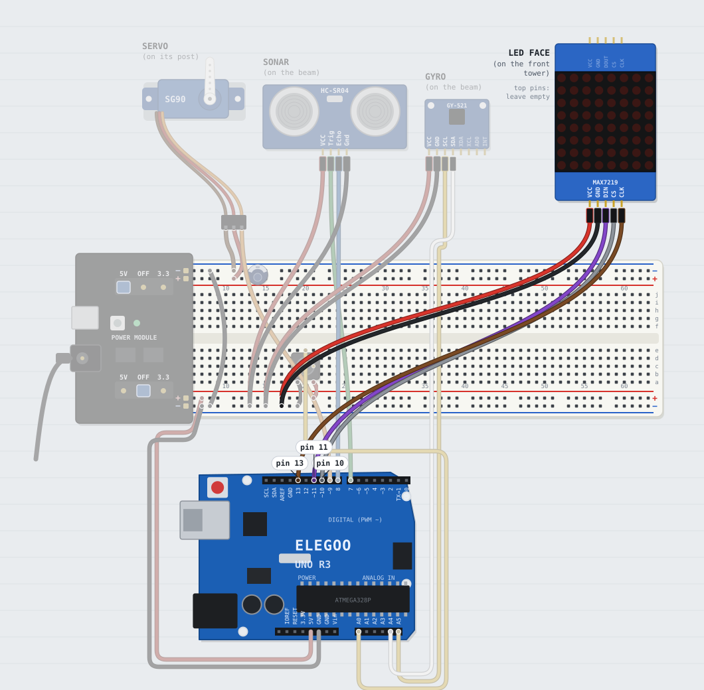
| Matrix pin | Female-to-male wire to |
|---|---|
| VCC | bottom red (+) rail |
| GND | bottom blue (−) rail |
| DIN | Arduino pin 11 |
| CS | Arduino pin 10 |
| CLK | Arduino pin 13 |
Remote receiver
- Plug the receiver into three columns with its dark dome facing the front edge of the breadboard.
- G → bottom blue rail. R → bottom red rail. Y → Arduino pin 2.
Buzzer
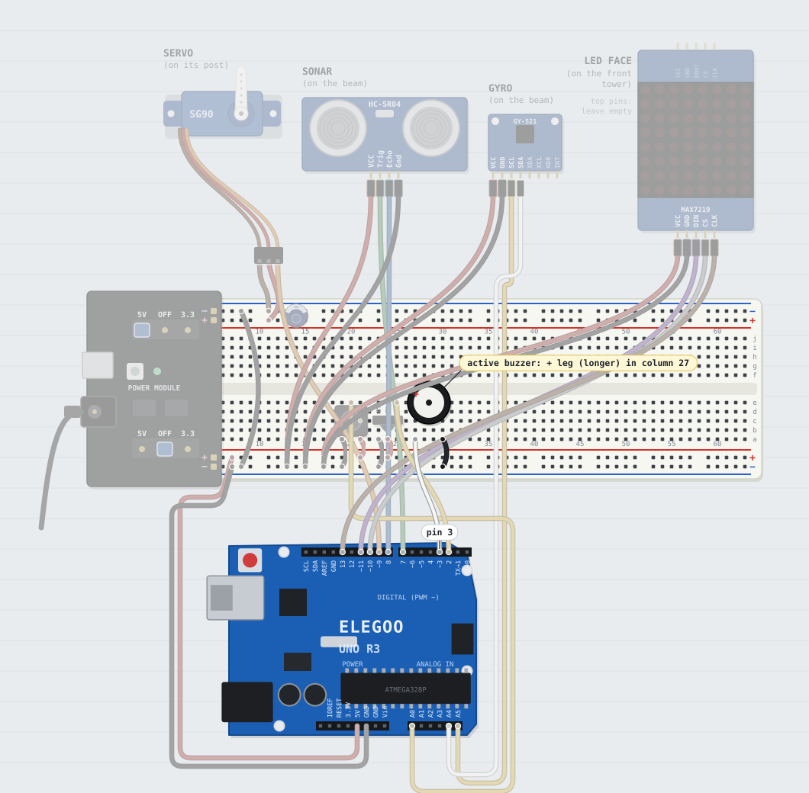
- Use the active buzzer: sticker on top, sealed black bottom. (The passive one shows a green circuit board underneath.)
- Longer leg (marked +) → Arduino pin 3. Other leg → bottom blue rail.
Check the wiring
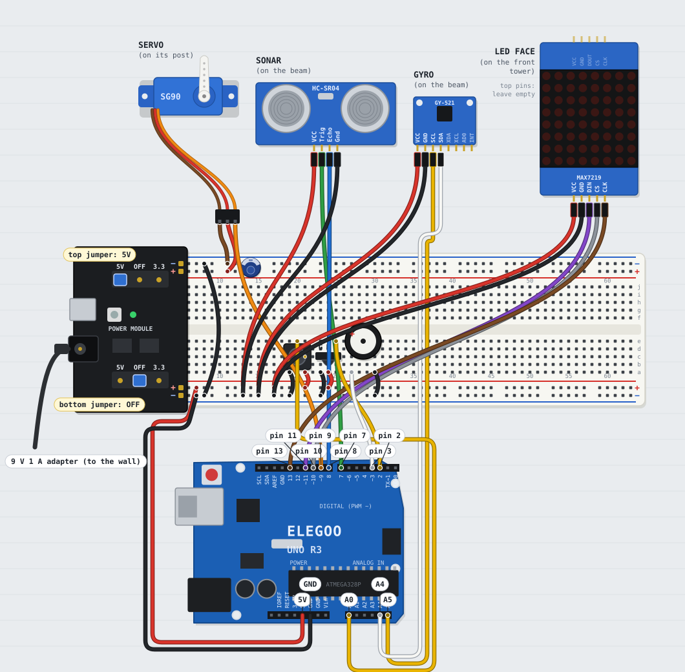
| Arduino pin | Goes to |
|---|---|
| D2 | remote receiver Y |
| D3 | buzzer + |
| D7 | sonar Trig |
| D8 | sonar Echo |
| D9 | servo orange |
| D10 | LED matrix CS |
| D11 | LED matrix DIN |
| D13 | LED matrix CLK |
| A0 | knob middle leg |
| A4 | GY-521 SDA |
| A5 | GY-521 SCL |
| 5V, GND | bottom red and blue rails |
Three things to double-check: the capacitor's stripe faces the blue rail; the power module's + and − line up with the red and blue stripes; and nothing from the bottom rails touches the top red rail, which belongs to the servo alone.
Bring it to life
Everything from here on happens in the Gym, a web app in the fulcrum folder on your Mac. It has three tabs: Dream (training), Exam (testing) and Robot (the USB connection).
Open the Gym
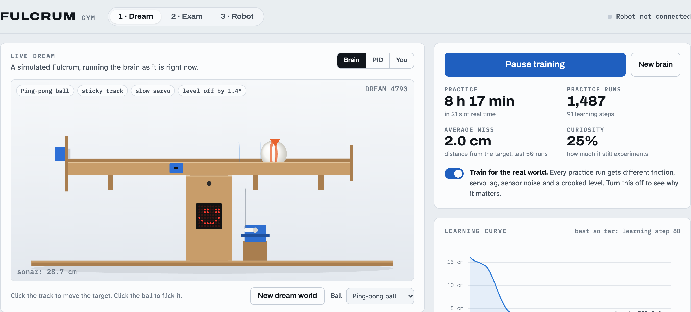
- Open the Gym in Chrome at michaellomuscio.github.io/fulcrum/gym. It can reach the Arduino over USB from there.
- Or run it from your Mac, which also works offline: in Finder, open the
fulcrumfolder and double-click Fulcrum Gym.command. Chrome shows the Gym atlocalhost:8642/gym/; keep the small Terminal window open while you work. (Not on a Mac? Runpython3 -m http.server 8642in the folder.)
USB needs Chrome or Edge; Safari and Firefox don't support it. A Gym opened from inside claude.ai can train, run exams and drive a virtual robot, but can't reach USB.
Install the firmware
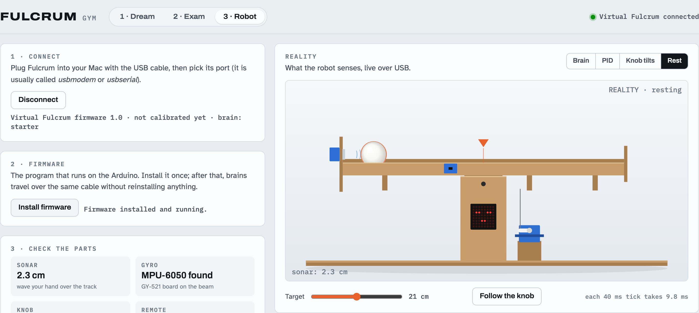
- Plug the Arduino into your Mac (through the USB-C adapter).
- In the Robot tab, click Connect and pick the port named like
usbmodem…orusbserial…. - Click Install firmware. About ten seconds later Fulcrum beeps twice and the status line says hello.
Plan B, the Arduino IDE: open fulcrum/firmware/Fulcrum/Fulcrum.ino, choose Tools › Board › Arduino Uno and your port, then Upload. No extra libraries are needed. Or flash it from Terminal with arduino-cli (see the README).
Test every part
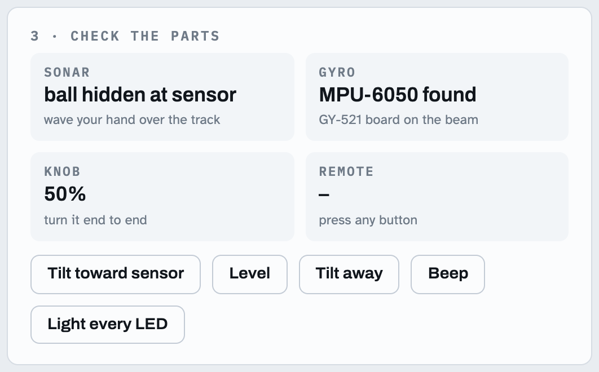
- Plug the 9 V adapter into the power module and press its button (its LED lights).
- Wave a hand over the sonar: the reading changes. The gyro says found. Turn the knob end to end. Press any remote button.
- Click Beep and Light every LED.
- Click Tilt toward sensor, Level and Tilt away: the servo's shaft turns.
Something silent? See Troubleshooting. Fixing it now, with everything on the table, is much easier than later.
Finish the robot
Mount the servo while the firmware holds it at its exact middle, then move the sensors onto the beam and let Fulcrum calibrate itself.
Servo and push-rod
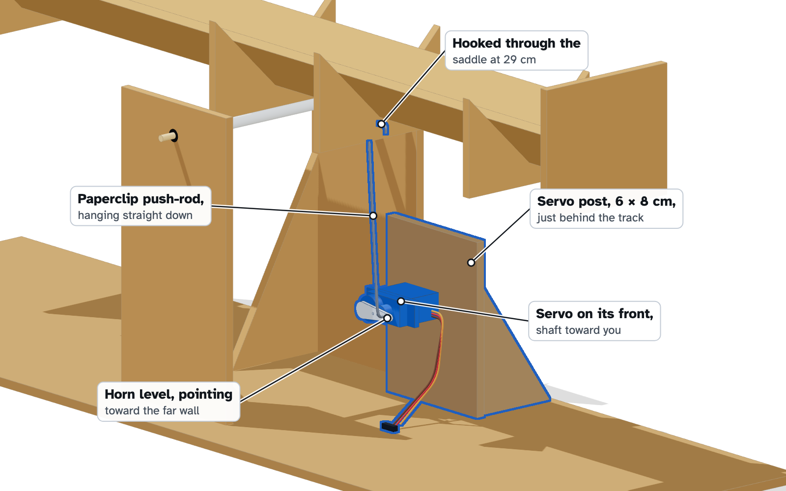
- Click Level in the Gym so the servo holds its middle position.
- Glue the servo post to the base right behind the push-rod saddle (29 cm), its front face 3.4 cm behind the track's center line, and add its brace behind it.
- Glue the servo to the post's front face with the shaft pointing toward you, about 5 cm above the base, just left of the push-rod saddle (by the length of the arm).
- Push the long single arm onto the shaft, pointing at the far wall, as close to horizontal as the teeth allow.
- Straighten the paperclip. Hook one end through the arm's outermost hole and squeeze the hook closed; hook the top end through the saddle's hole the same way. Bend the rod until the beam sits close to level.
No glue on the rod's joints. They have to pivot.
Mount the sensors
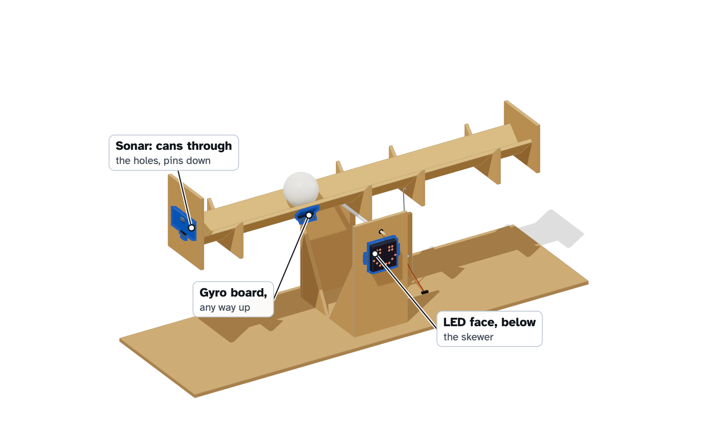
- Push the ultrasonic sensor's cans through the plate's holes from outside, pins pointing down, and tape the board in place.
- Stick the GY-521 to the outside of the track near 15 cm with double-sided tape. Any orientation works; calibration figures it out.
- Stick the LED matrix to the front tower below the skewer, facing you.
- Route the wires loosely so the beam swings without tugging on them.
Calibrate
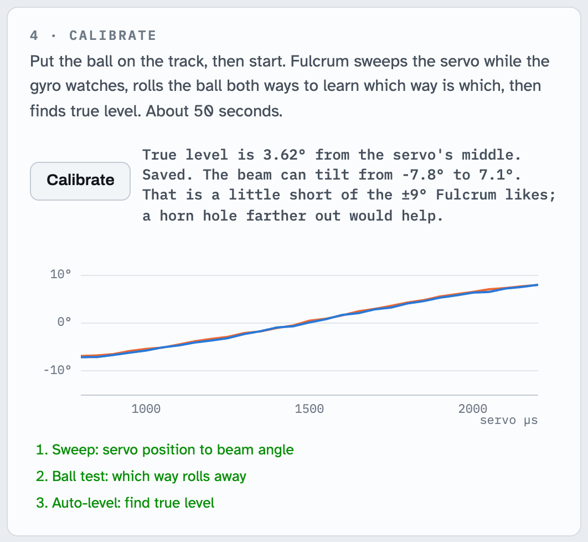
- Put the ball on the track and click Calibrate (or press ST/REPT on the remote). It takes about 50 seconds.
- Sweep: the servo moves slowly end to end while the gyro measures the beam, giving a map from servo position to beam angle.
- Ball test: it tilts one way, back, and again, and watches which way the ball rolls.
- Auto-level: it holds the ball mid-track and nudges until it finds true level. The result is saved on the Arduino.
If it reports that the ball didn't roll, check that the ball is on the track and that the beam sits roughly level at rest (adjust the push-rod's bends), then calibrate again.
Teach it
The robot can already balance with the starter brain I trained. Now train your own, examine it, and send it over.
Train a brain
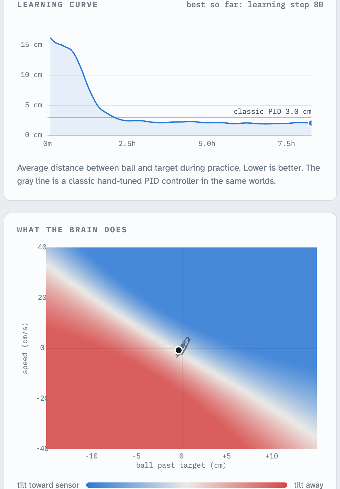
- In the Dream tab, press Start training. Sixty-four simulated Fulcrums practice at once, each with different physics.
- Watch the learning curve: it climbs while the brain explores, then drops below the gray line, the score of a classic hand-tuned controller.
- Watch What the brain does: a clean diagonal forms as it learns that the right tilt depends on both where the ball is and how fast it rolls.
- Two or three minutes is plenty. Click the track to move the target, click the ball to flick it, or press You and try balancing it yourself.
The exam
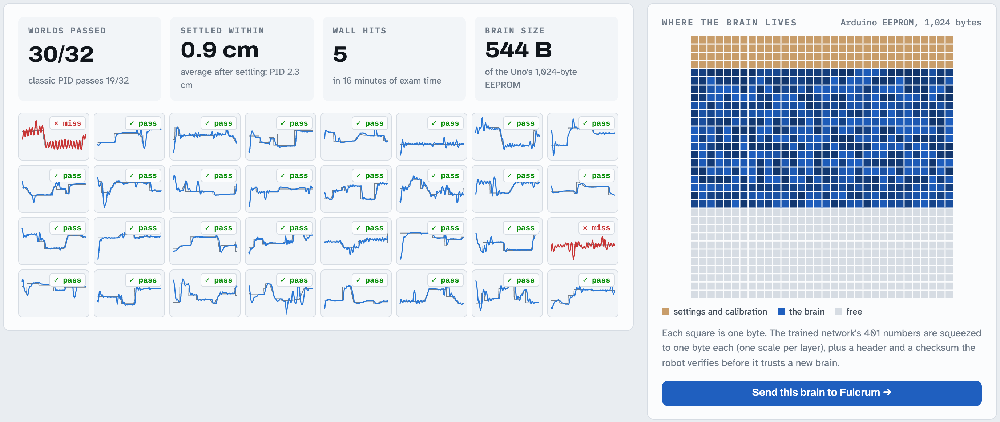
- Open Exam, choose Best so far, and click Run the exam.
- It's graded on the 544-byte, 8-bit copy the Arduino will run. Passing most of the 32 worlds means it's ready.
Send the brain
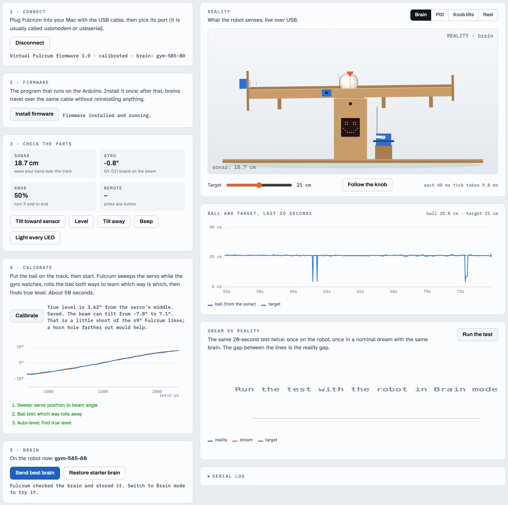
- In Robot, click Send best brain. The Arduino checks every piece and stores the brain in memory that survives power-off.
- Choose Brain mode, set the ball on the track, and let go.
Play with it
| Button | What Fulcrum does |
|---|---|
| POWER or ▶❚❚ | start balancing, or rest |
| FUNC/STOP | switch brain → classic PID → knob tilts the beam (you're the brain) |
| 1 … 9 | send the ball to a spot: 1 is nearest the sensor, 9 is farthest |
| 0 | hand the target back to the knob |
| ▲ ▼ | nudge the target 1 cm |
| VOL+ VOL− | fine-tune level by 0.05° |
| ◀◀ ▶▶ | face, neurons, or a tiny copy of the beam on the LED matrix |
| EQ | buzzer on or off |
| ST/REPT | calibrate |
Unplugged from the Mac, Fulcrum keeps its brain and calibration. Power the Arduino with the 9 V battery (or a USB power bank) and the servo with the adapter, then press POWER on the remote.
Dream vs reality
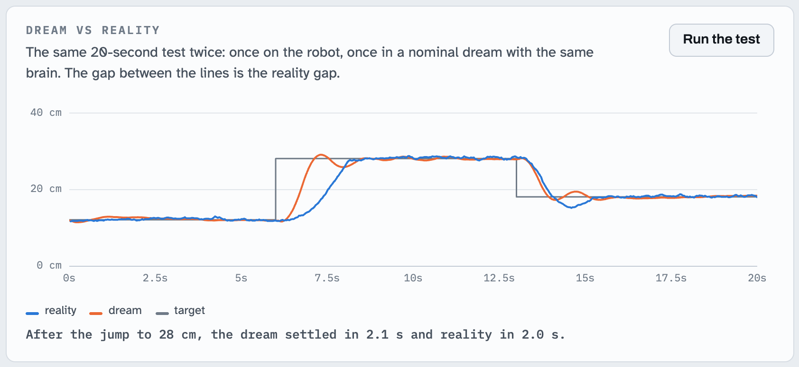
- In Robot, with Brain mode on, click Run the test. Fulcrum runs a 20-second routine of target jumps on the real track, then the Gym dreams the same routine with the same brain.
- The space between the blue and orange lines is the reality gap. Small gap: the dream was a good model of your cardboard.
The screenshot above is the virtual robot, whose physics are deliberately different from the dream's. Yours will tell you how good the simulator really is.
Experiments
- Skip the randomization. Turn off Train for the real world, train a new brain, send it. It aces its one perfect dream and struggles on real cardboard.
- Change the ball. Try a golf ball (pick it in the Gym first). Does the brain cope with a heavier, faster ball?
- Watch it learn from scratch. Press New brain and keep your eye on the decision map. The moment the diagonal appears is when it figured out balancing.
- Beat the classic controller. Run the dream-vs-reality test in Brain mode and in PID mode and compare.
- Be the brain. FUNC/STOP until the knob tilts the beam, and try to hold the ball still. Then let the brain have it back.
Troubleshooting
| What you see | Usual cause and fix |
|---|---|
| No port to pick in Connect | Try another cable or adapter (some USB-C adapters are charge-only). Use Chrome; Safari has no USB support. |
| Connected, but no hello | Firmware not installed yet: click Install firmware. Or the Arduino IDE's Serial Monitor is open and holding the port; close it. |
| Install firmware says it can't reach the bootloader | Unplug and replug the Arduino, reconnect, try again. Still failing: use Plan B (Arduino IDE). |
| Sonar: no echo | Trig and Echo swapped (pin 7 is Trig, 8 is Echo), or VCC/Gnd loose. The cans must face down the track. |
| Gyro: not found | SDA/SCL swapped (SDA is A4, SCL is A5) or VCC loose. Fulcrum still works without it, with a less precise calibration. |
| Servo doesn't move, or twitches and the Arduino resets | Power module off or the 9 V adapter unplugged; top jumper not on 5V; capacitor backwards; servo red wire on the bottom rail. |
| Remote does nothing | Y must go to pin 2; aim at the receiver's dome; replace the remote's coin cell (pull the plastic tab out first). |
| LED face is sideways or upside down | Click Rotate face in the Gym's Check the parts panel until it looks right (it remembers). |
| Ball always runs off to one end | Calibrate again with the ball on the track. If the ball test fails, the beam is far from level at rest: re-bend the push-rod. |
| Ball hunts back and forth around the target | Loose push-rod joints add slop (tighten the hooks, but keep them free to turn). Train a little longer. Make sure the wires aren't tugging the beam. |
How it works, for the curious
The real equations behind the simulator, the learner and the robot.
The physics in the dream
Put the pivot at the origin, let s be the ball's position along the track measured from the pivot, θ the beam angle (positive tips the far end down), h the height of the ball's center above the pivot, rc the ball's rolling radius on the V, m and J its mass and moment of inertia. Rolling without slipping makes the ball's spin ω = ṡ/rc + θ̇, so
A ping-pong ball is a thin shell, J = ⅔mr², and in a 90° V it rolls on a radius rc = r/√2, so k = 1/(1 + 4/3) = 3/7 ≈ 0.43: only 43% of gravity's pull along the track becomes acceleration; the rest spins the ball. The heffθ̈ term is the kick the ball gets when the beam jerks. The simulator adds rolling friction that sticks below a threshold, bumps in the cardboard, a servo modeled as a stiff damped spring with dead time, speed and torque limits, gear slop, and an ultrasonic sensor with noise, dropouts, garbage echoes and a blind spot.
What the brain sees and does
The sonar's readings go through an alpha-beta tracker (the same arithmetic on the Arduino and in the dream):
The brain is a 6 → 16 → 16 → 1 network with tanh neurons. Its inputs are the miss e = x̂ − target (scaled by 15 cm), the speed (scaled by 40 cm/s), its last two tilts, the integral of the miss (scaled by 0.05 m·s), and where the ball is. Its output, between −1 and 1, is the tilt in units of 7°.
How it learns: PPO
Each practice step earns a reward for being close and calm:
Proximal Policy Optimization nudges the brain toward actions that turned out better than a second network, the critic V, expected, while never changing the policy too much at once:
The critic is allowed to peek at the dream's hidden physics (the true level error, the true ball position), which makes its estimates better; the brain that ships to the robot only ever sees the sensor. That split is called an asymmetric actor-critic. Training runs 64 worlds in parallel, 8,192 decisions per learning step.
Fitting it into 1 KB
Each layer's weights are stored as signed bytes with one scale per layer, w ≈ s·q, q = round(w/s), s = max|w|/127, so a neuron computes b + s·Σqkxk. The whole brain is 544 bytes with its header and CRC-32 checksum. The exam grades exactly this copy, and on a desktop the firmware's C++ matches the Gym's JavaScript to within 10−7.
Calibration without knowing how the gyro is mounted
Fulcrum reads which way is "up" (u) at the servo's middle and at both extremes (gA, gB). The pivot axis is n = (gA × gB)/|gA × gB|, and any later reading's beam angle is
which doesn't care which way the board faces. Level comes from the ball itself: a gentle controller holds it mid-track while a correction creeps toward wherever the ball drifts; averaged over ten seconds, the tilt that keeps the ball still is true level.
What I tested before you build
The real firmware was compiled for the Uno (27.9 KB of 32 KB flash, 790 bytes of RAM to spare) and also run on a Mac against the simulated robot: it calibrates, balances as well as the simulator predicts, accepts new brains and refuses a corrupted one. None of this is a promise about your cardboard. That's what the dream-vs-reality test is for.
Fulcrum Gym.command | double-click to open the Gym in Chrome (needed for USB) |
firmware/Fulcrum/ | the Arduino program (Fulcrum.ino plus helpers). PROTOCOL.md lists its USB commands. |
gym/ | the Gym web app; gym/firmware_hex.js is the compiled firmware it installs |
core/ | shared code: the simulator, the PPO learner, the brain packer, calibration, and spec.js, the single source of every constant |
guide/ | this guide, its narration, illustrations, and fulcrum-cut-templates.pdf |
tools/ | headless training, the exam, and the tests that compare the firmware with the simulator |
BUILD_SPEC.md | every dimension, position and wire, in one place |